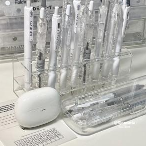
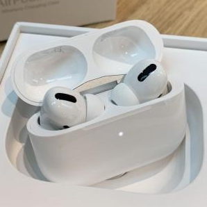

If you think you will miss something on your list, stop and look at our Back-to-School Essentials which consists of things you might need for the upcoming school year! This website is directed towards middle school and high school students, and we hope that this guide will assist you with cheap and reliable products for shopping, and useful study tips, guides, and notes for academics.
Back to School shopping is an important part of going back with a fresh start. With the supplies you shop for, a students can strive to be more organised, and have better time management. When going back to school shopping, it is essential to look for cheap prices, as well as good features on technology, stationery, and clothes.
When going to school, a student needs to excel in their academics as well. We have provided study guides for students to reach their goals. The notes are classified by subject and/or techniques.
 